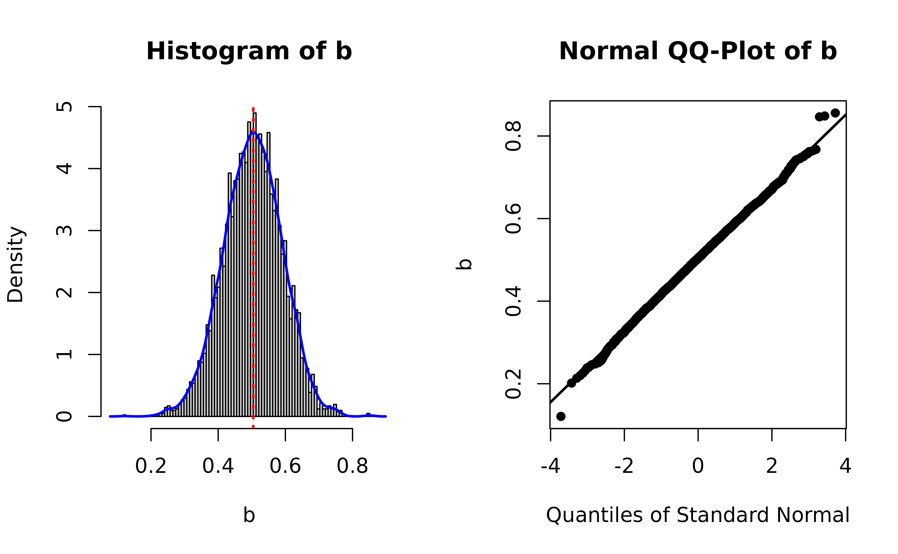
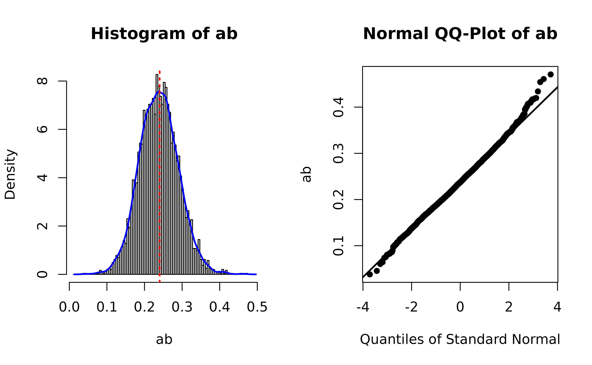
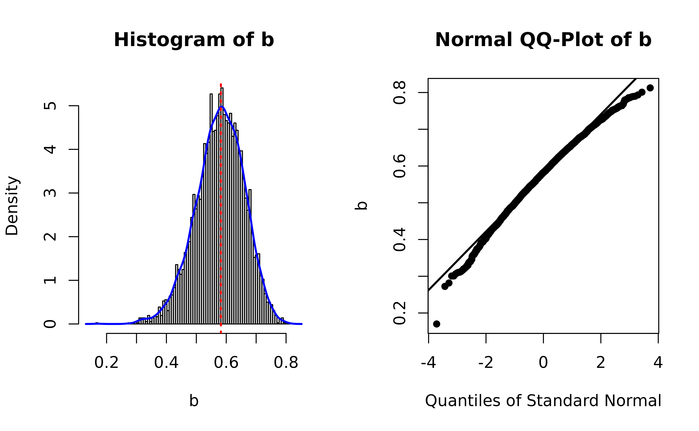

Diagnostic Plots of Bootstrap Estimates
Shu Fai Cheung
Source:vignettes/articles/plot_boot.Rmd
plot_boot.RmdIntroduction
This document introduces the function plot_boot(), and
related helpers, from the package semhelpinghands.
They are used for generating plots of distribution of bootstrap
estimates, as suggested by Rousselet et al.
(2021), to check if there is anything unusual in the bootstrap
distribution, such as bootstrap estimates that are unusually extreme
compared to other estimates.
Data and Model
A mediation model example modified from the official
lavaan website is used (https://lavaan.ugent.be/tutorial/mediation.html).
library(lavaan)
#> This is lavaan 0.6-16
#> lavaan is FREE software! Please report any bugs.
set.seed(12345)
n <- 100
X <- rnorm(n)
M <- .30 * X + sqrt(1 - .30^2) * rnorm(n)
Y <- .60 * M + sqrt(1 - .60^2) * rnorm(n)
Data <- data.frame(X = X,
Y = Y,
M = M)
model <-
"
# direct effect
Y ~ c*X
# mediator
M ~ a*X
Y ~ b*M
# indirect effect (a*b)
ab := a*b
# total effect
total := c + (a*b)
"This model is fitted with se = "bootstrap" and 5000
replication. (Change ncpus to a value appropriate for the
system running it.)
fit <- sem(model,
data = Data,
se = "bootstrap",
bootstrap = 5000,
parallel = "snow",
ncpus = 4,
iseed = 1234)(Note that having a warning for some bootstrap runs is normal. The failed runs will not be used in forming the confidence intervals.)
This is the bootstrap confidence intervals:
parameterEstimates(fit)
#> lhs op rhs label est se z pvalue ci.lower ci.upper
#> 1 Y ~ X c 0.008 0.071 0.117 0.906 -0.135 0.141
#> 2 M ~ X a 0.390 0.076 5.133 0.000 0.235 0.534
#> 3 Y ~ M b 0.505 0.087 5.814 0.000 0.331 0.668
#> 4 Y ~~ Y 0.541 0.076 7.121 0.000 0.383 0.682
#> 5 M ~~ M 0.911 0.117 7.798 0.000 0.674 1.135
#> 6 X ~~ X 1.230 0.000 NA NA 1.230 1.230
#> 7 ab := a*b ab 0.197 0.049 3.986 0.000 0.106 0.296
#> 8 total := c+(a*b) total 0.205 0.081 2.519 0.012 0.040 0.361Plot Bootstrap Distribution
Free Parameters
To plot the distribution of bootstrap estimates of free a parameter
(not user-defined parameter, i.e., not ab), call
plot_boot(). The following is a sample call to plot the
bootstrap estimates of the b path:
library(semhelpinghands)
plot_boot(fit,
param = "b",
standardized = FALSE,
qq_dot_size = 1)These are the required arguments:
The first argument is the output of
lavaan.The argument
paramshould be the name of the parameter to be plotted, as appeared in a call tocoef().The argument
standardizedis required. It indicates whether the bootstrap estimates from the standardized solution are to be plotted.
The argument qq_dot_size is optional, for controlling
the size of the points in the normal QQ-plot.
This is the plot

The plot is similar to that of the output of
boot::boot(). The left panel is a histogram with:
A red dotted line to represent the point estimate of the parameter (the estimate of
bin thelavaanoutput in this example).A kernel density plot (blue line) of the distribution.
The right panel is a normal QQ-plot generated by
qqnorm() and qqline(). If the distribution is
normal, the points should lie on the line. Deviation from a normal
distribution will be manifested as points deviate from the line
vertically, usually at the lower or upper end of the distribution.
User-Defined Parameters
Only the bootstrap estimates of free parameters are stored by
lavaan. To plot the distribution of bootstrap estimates,
call store_boot_def() first to compute the bootstrap
estimates of user-defined parameters and store them back to the output
of lavaan.1
fit <- store_boot_def(fit)Once computed and stored, plot_boot() can be used again.
For example, to plot the distribution of ab, the indirect
effect, just set param to "ab".
plot_boot(fit,
param = "ab",
standardized = FALSE,
qq_dot_size = 1)The plot suggests that, as expected, the sampling distribution of the indirect effect is not normal (positively skewed).
Standardized Solution
To plot the bootstrap estimates in the standardized solution, such as
standardized regression coefficients, correlations, and standardized
indirect effect, first call store_boot_est_std() to compute
the bootstrap estimates in the standardized solution and store them back
to the output of lavaan.2
fit <- store_boot_est_std(fit)Once computed and stored, plot_boot() can be used again.
For example, to plot the distribution of the standardized indirect
effect, just set param to "ab" and
set standardized to TRUE:
plot_boot(fit,
param = "ab",
standardized = TRUE,
qq_dot_size = 1)
Note that it is not unusual for a parameter to have a nonnormal
sampling distribution in the standardized solution. For example, this is
the plot of the bootstrap estimates of the standardized path from
M to Y:
plot_boot(fit,
param = "b",
standardized = TRUE,
qq_dot_size = 1)
Compared to the previous plot of b in the original
(unstandardized) solution, the distribution is nonnormal (negatively
skewed).
Customizing the Plots
Users can customize a lot of aspects of the plot, such as the color
of the lines, the number of bars, and the size of the dots in the normal
QQ-plot. Please refer to the help page of plot_boot() for
the arguments available.